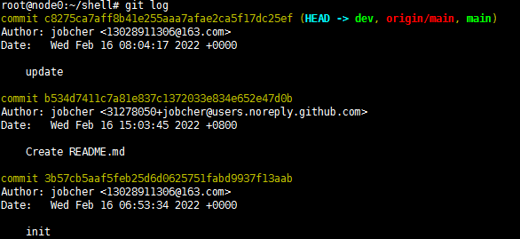

git版本控制
git 版本控制
版本回退
1.查看 git 提交历史
#查看git提交历史
git log

如果嫌输出信息太多，看得眼花缭乱的，可以试试加上--pretty=oneline参数
git log --pretty=oneline
2.回退到上一个版本
Git必须知道当前版本是哪个版本，在 Git 中，用HEAD表示当前版本，也就是最新的提交b534d741..（注意我的提交 ID 和你的肯定不一样），上一个版本就是HEAD^，上上一个版本就是HEAD^^，当然往上 100 个版本写 100 个^比较容易数不过来，所以写成HEAD~100
git reset --hard HEAD^
最新的那个版本已经看不到了，可以顺着往上找，找到那个版本的 ID
git reset --hard c8275ca
Git 在内部有个指向当前版本的HEAD指针,当你回退版本的时候，Git 仅仅是把HEAD从指向update
┌────┐
│HEAD│
└────┘
│
└──> ○ update
│
○ Create README.md
│
○ init
改为指向 Create README.md：
┌────┐
│HEAD│
└────┘
│
│ ○ update
│ │
└──> ○ Create README.md
│
○ init
现在，你回退到了某个版本，关掉了电脑，第二天早上就后悔了，想恢复到新版本怎么办？找不到新版本的commit id怎么办？
在 Git 中，总是有后悔药可以吃的。当你用$ git reset --hard HEAD^回退到Create README.md版本时，再想恢复到update，就必须找到update的 commit id。Git 提供了一个命令git reflog用来记录你的每一次命令：
git reflog
3.总结一下：
HEAD指向的版本就是当前版本，因此，Git 允许我们在版本的历史之间穿梭，使用命令git reset --hard commit_id。- 穿梭前，用
git log可以查看提交历史，以便确定要回退到哪个版本。 - 要重返未来，用
git reflog查看命令历史，以便确定要回到未来的哪个版本。
工作区和暂存区
工作区（Working Directory）
就是你在电脑里能看到的目录，比如我的shell文件夹就是一个工作区
版本库（Repository）
工作区有一个隐藏目录.git，这个不算工作区，而是 Git 的版本库。
管理修改
那怎么提交第二次修改呢？你可以继续git add再git commit，也可以别着急提交第一次修改，先 git add 第二次修改，再git commit，就相当于把两次修改合并后一块提交了：
第一次修改 -> git add -> 第二次修改 -> git add -> git commit
现在，你又理解了Git是如何跟踪修改的，每次修改，如果不用git add到暂存区，那就不会加入到commit中。
撤销修改
git checkout -- file可以丢弃工作区的修改
git checkout -- readme.txt
命令git checkout -- readme.txt意思就是，把readme.txt文件在工作区的修改全部撤销，这里有两种情况：
一种是readme.txt自修改后还没有被放到暂存区，现在，撤销修改就回到和版本库一模一样的状态；
一种是readme.txt已经添加到暂存区后，又作了修改，现在，撤销修改就回到添加到暂存区后的状态。
总之，就是让这个文件回到最近一次git commit或git add时的状态。
git checkout -- file命令中的--很重要，没有--，就变成了“切换到另一个分支”的命令，我们在后面的分支管理中会再次遇到git checkout命令。